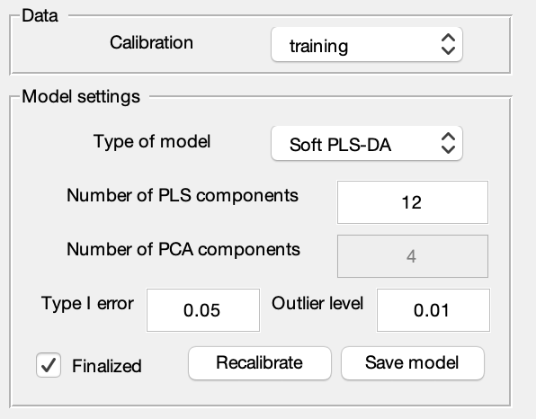
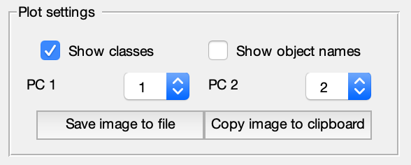
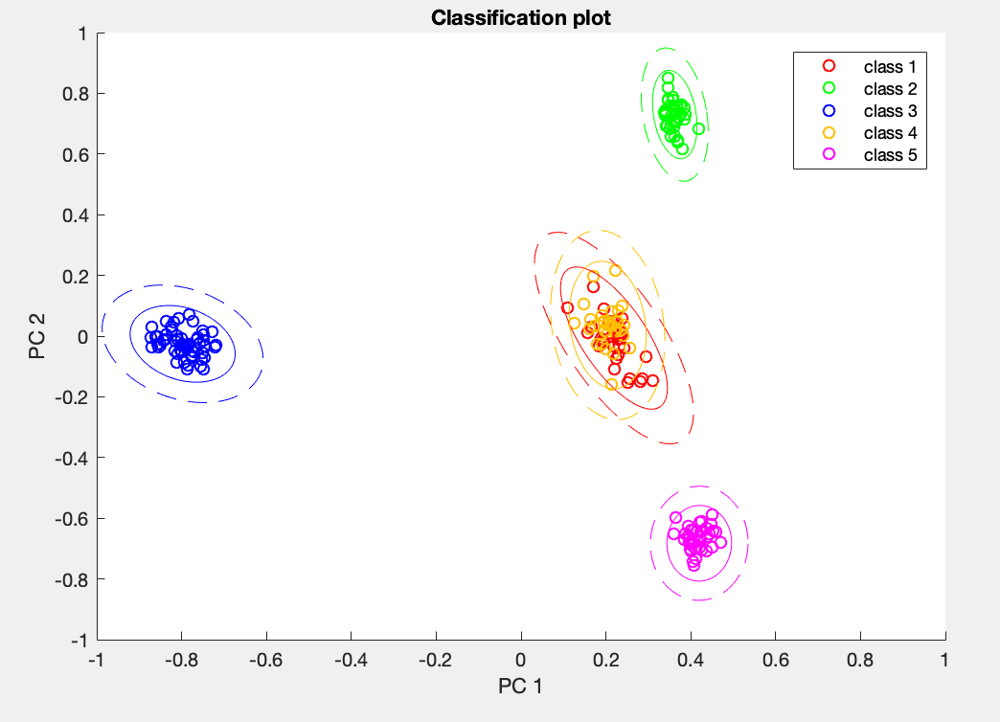
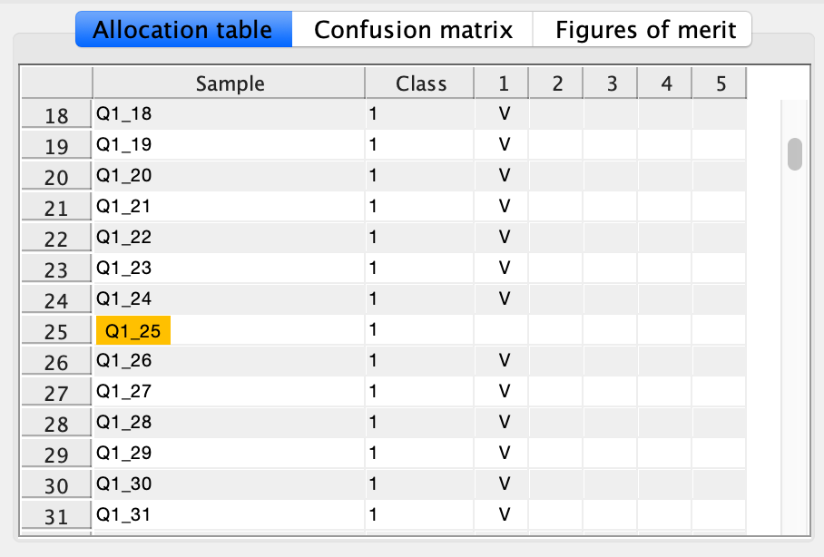
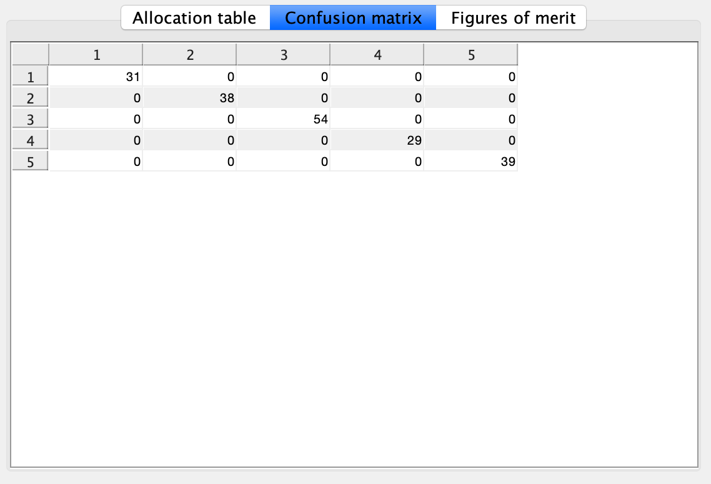
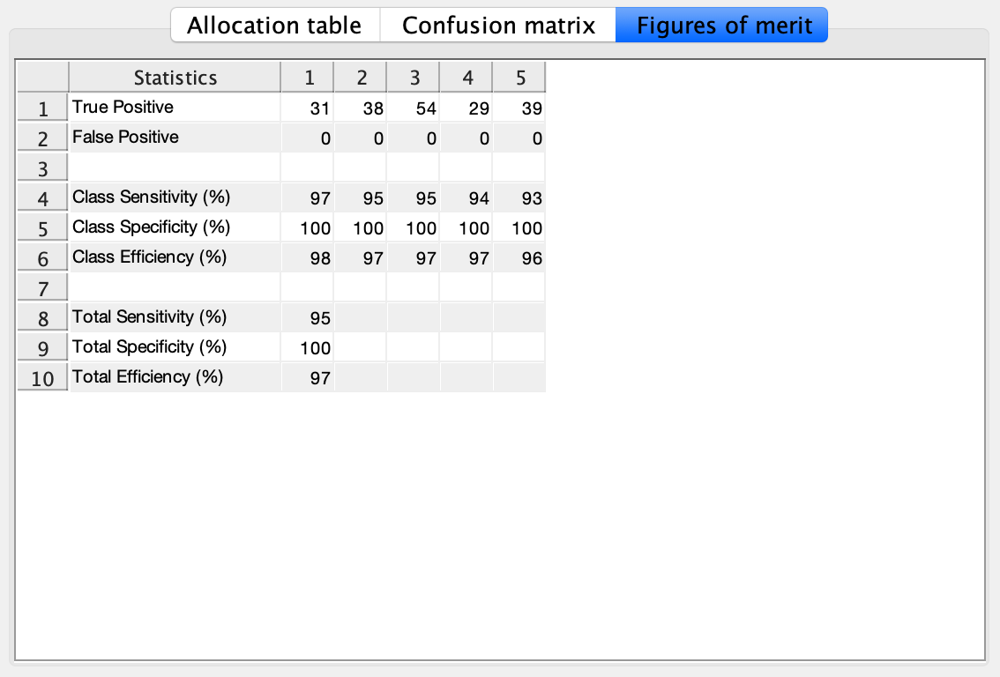

The Model tab becomes available if at least one DataSet object with Calibration property set to True is present in the Matlab Workspace.
On the Model tab select a training set from the Calibration drop-down list.
Adjust the parameters of the model. It is possible to indicate the type of the model (Soft or Hard), number of PLS components value of the type I error and Outlier significance level.
Click the Calibrate button to create the model.
The results are now available on the Classification plot and Clasification table sub-tabs.
Onse the model is ready, check the Finalized checkbox. The Prediction tab will become available.
The Allocation matrix, Confusion matrix and Figures of merit are available on the Clasification table sub-tab.
One can use Save tables to file and Copy tables to clipboard buttons to store the Allocation matrix, Confusion matrix and Figures of merit to disk or clipboard.
To get complete modelling results collected in a PLSDAModel object click the Save model button and select a name of the new model. It will be added to the Matlab workspace as a variable.
One can save the current workspace to a .mat file to preserve the results. Later on one can load the .mat file into the Matlab workspace and resume working with the model.
One can use Save image to file and Copy image to clipboard to store the image in the Classification plot tab to disk or clipboard.


Model tab. Settings.

Model tab. Classification plot.

Model tab. Allocation table.
The samples marked with yellow has not been assigned to any class by the model.
The samples marked with red has been assigned to a wrong class by the model.
The samples marked with pink has been assigned to several classes by the model.

Model tab. Confusion matrix.

Model tab. Figures of merit.Model tab. Classification table options.